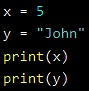

Creating Variables
Python has no command for declaring a variable.
A variable is created the moment you first assign a value to it.
Variables do not need to be declared with any particular type, and can even change type after they have been set.
Note: Variable names are case-sensitive

You can get the data type of a variable with the type() function.

Variable Names
A variable can have a short name (like x and y) or a more descriptive name (age, carname, total_volume). Rules for Python variables:
- A variable name must start with a letter or the underscore character
- A variable name cannot start with a number
- A variable name can only contain alpha-numeric characters and underscores (A-z, 0-9, and _ )
- Variable names are case-sensitive (age, Age and AGE are three different variables)
- A variable name cannot be any of the Python keywords.

Multi Words Variable Names

Many Values to Multiple Variables
Python allows you to assign values to multiple variables in one line

One Value to Multiple Variables
And you can assign the same value to multiple variables in one line

Unpack a Collection
If you have a collection of values in a list, tuple etc. Python allows you to extract the values into variables. This is called unpacking.

Global Variables
Variables that are created outside of a function (as in all of the examples above) are known as global variables.
Global variables can be used by everyone, both inside of functions and outside.

If you create a variable with the same name inside a function, this variable will be local, and can only be used inside the function. The global variable with the same name will remain as it was, global and with the original value.
To create a global variable inside a function, you can use the global keyword.

To change the value of a global variable inside a function, refer to the variable by using the global keyword.